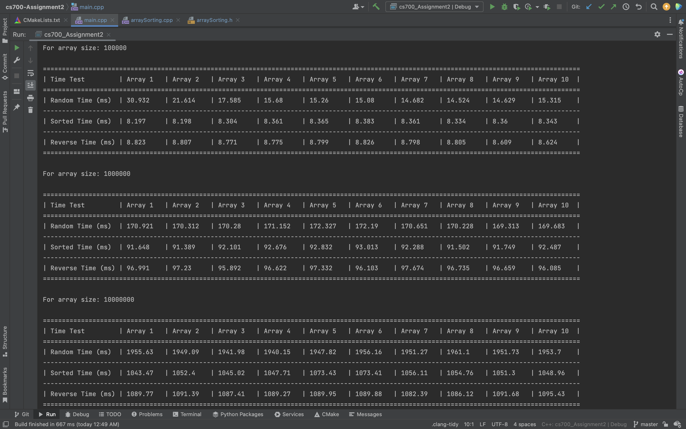
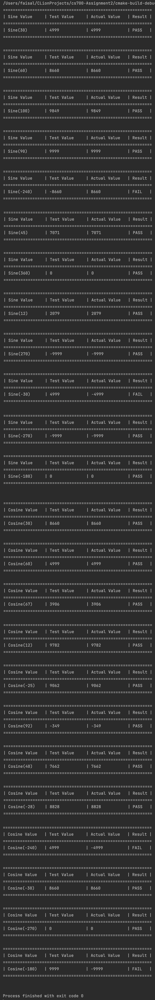

CS-700 Assignment 2


Getting Started
This assignment contains 2 programs one to calculate the execution time for sorting an array and the other one to do white box testing for sine and cosine values. The program contains the following:
1. Main file containing both modules.
Contents -
Usage -
Running the main() function will run both the modules.
2. Module 1 - Execution time for sorting random, sorted and reversed arrays.
Contents -
Usage -
Running this program to calculate the execution time for sorting random, sorted and reversed arrays.
Output -
- Console output

3. Module 2 - White box testing of sines and cosines.
Contents -
Usage -
Running this program will test sine/cosine functions with different values using whitebox testing.
Output -
- Console output
